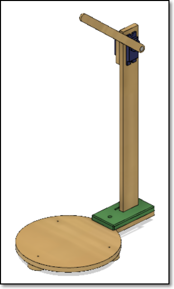
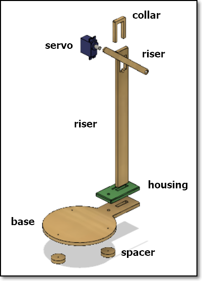
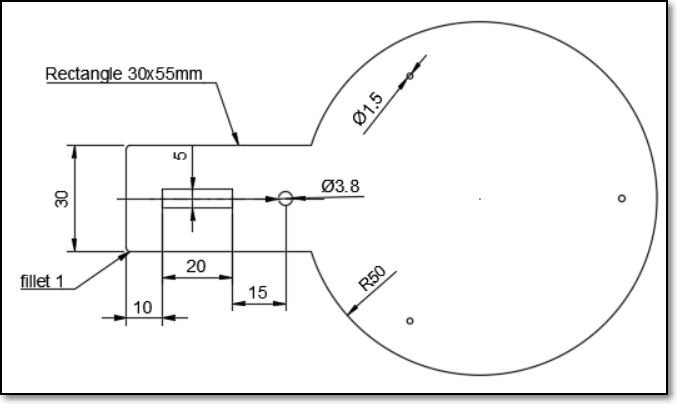
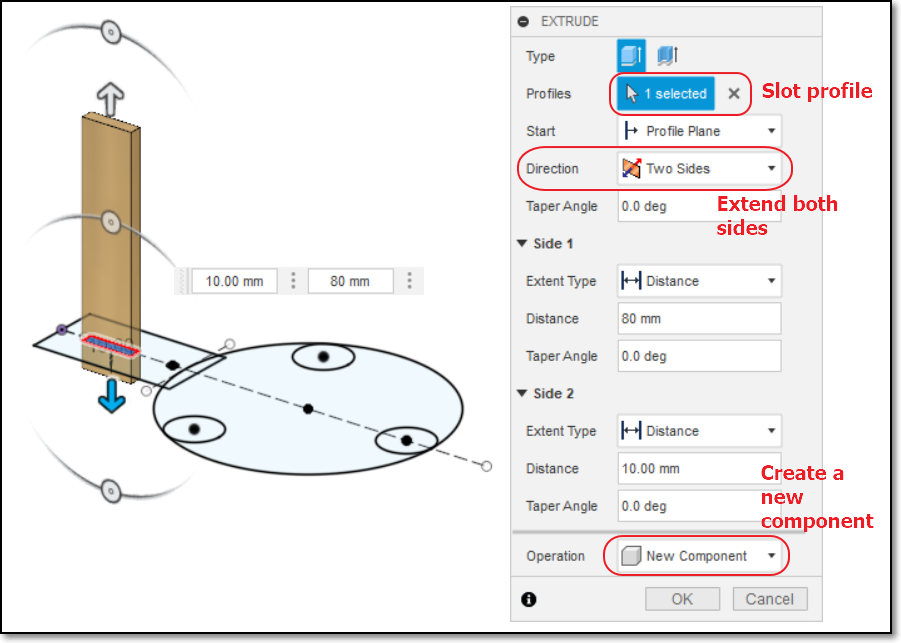
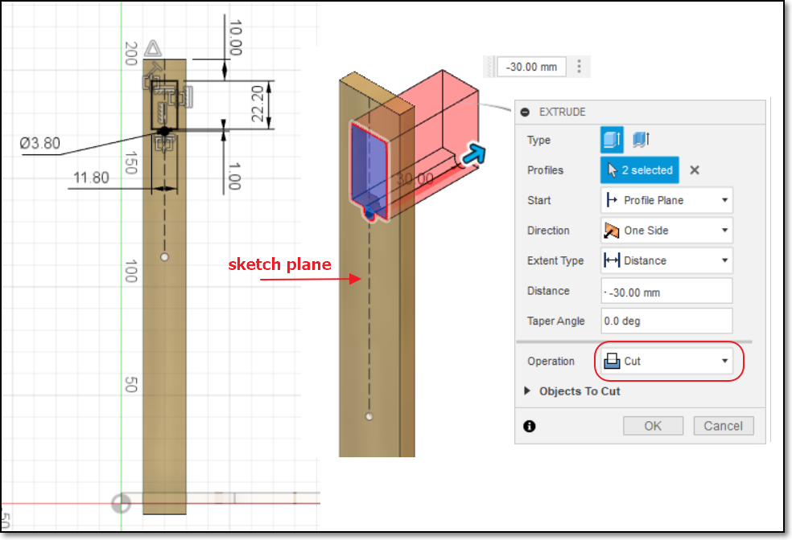
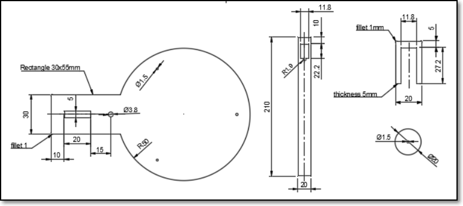
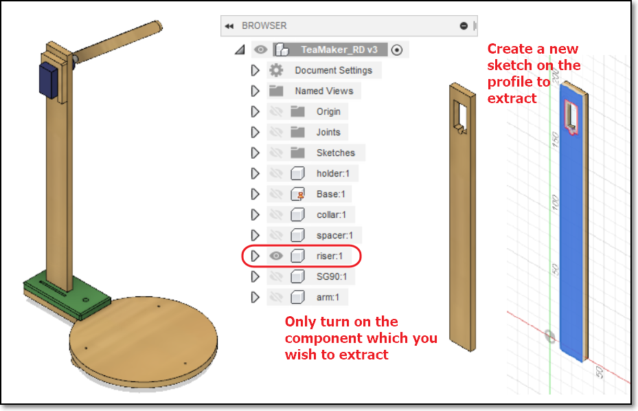

name: default-page layout: true background-image: url("fablabsp_icon_100px.png") background-position: 98% 2% --- class: center, middle # Modelling 3D Objects - Tea Maker ### 3D Modelling, 3D Printing, Laser cutting, Microcontroller, Servo Motor --- template: default-page layout: false # Overview ### Let's sketch the project .left-column-50[  ] .right-column-50[ - Arm to hold/rise/drop teabag - Motor to move the arm - Riser to let the arm be above the tea cup - Base to hold the tea cup - Studs/stands to have proper stability - Housing for CPU and Riser ] --- template: default-page layout: false # Component parts .left-column-50[  ] .right-column-50[ - We can design the entire project on the laptop - We can then - 3D print the housing - 2D laser cut the other component parts - test the electronics ### Without going to the respective labs! ### .blue[Digital Fabrication] ] --- template: default-page layout: false # Component parts .right-column-35[ - Each part is a .blue[COMPONENT] - Start with the base (as the ground) - Create the other components from the base - Or, use joints (advanced!) ### Base - One point on the .blue[ORIGIN] - Use a parameter for thickness - Use constraints to draw the object - Extrude the profile to get a 3D object ] .left-column-60[  ] --- template: default-page layout: false # Fusion 360 - Constraints ### Constraints assist in "fixing" your sketchs ### Tips - start drawing from the .blue[ORIGIN] - base all further drawing from the origin point - use parameters for dimensions that may change (e.g. thickness) - use .blue[CONSTRAINTS] instead of "eyeballing" - Horizontal, Vertical - Coincident, Collinear - Tangent - Parallel, Perpendicular - Equidistant ### Now, draw the base component .footer.right[[Kevin Kennedy - How to Add Sketch Constraints](https://youtu.be/BGwBZJ14KHQ)] --- template: default-page layout: false # Base Extrude the profile to form the 3D body. --- template: default-page layout: false # Riser  - Use the "slot" profile - Extrude to create the riser bar - Create as a .blue[New Component] --- template: default-page layout: false # Slot for Motor  - Make the Riser component .blue[Active] - Create a sketch on the face of the Riser - Extrude to create the opening for the motor --- template: default-page layout: false # Complete the Design  ### Plans: [tea maker plans](teamaker_drawing_v1.pdf) --- template: default-page layout: false # Extracting Profiles for Cutting  - Turn OFF parts that are not in the profile - Create a .blue[NEW] sketch on the profile plane - Select the object on the plane - Close the sketch - Export the sketch to DXF --- template: default-page layout: false # Save profile as DXF file .left-column-50[ <img src="save_to_DXF.png" style="width:350px" /> ] .right-column-50[ - .blue[DXF] Data Interchange Format, a simple 2D format developed by AutoDesk - Most cutting machines accept DXF files ###Tip: - Check your DXF file using [LibreCAD](https://librecad.org/) ] ] --- template: default-page layout: false # Exercise ### Use Fusion 360 to draw the base, riser, spacers ### Export the base profile to DXF for laser cutting .footer.right[You can, also, export the riser and spaces, as well.] --- class: center, middle # Tea Maker ### .red[End]